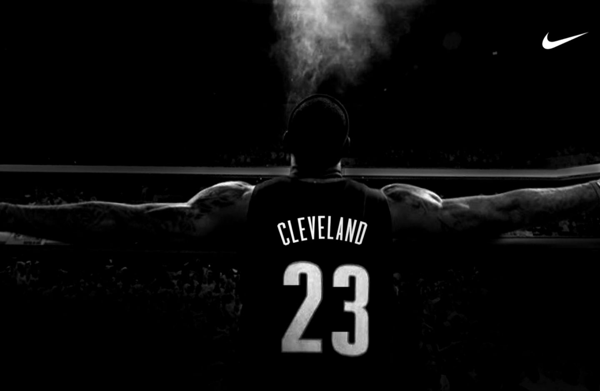
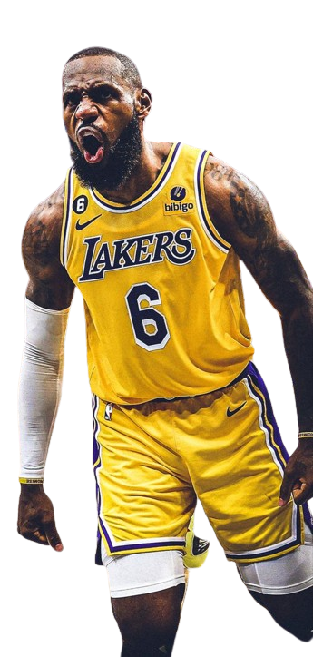

ACHIEVEMENTS
- Here are some of the key achievements and accolades of LeBron James:
- 4-time NBA Champion (2012, 2013, 2016, 2020)
4-time NBA Finals MVP
4-time NBA Most Valuable Player
18-time NBA All-Star
6-time NBA All-Defensive Team selection
NBA scoring champion (2008)
2-time Olympic gold medalist (2008, 2012)
18-time All-NBA Team selection
Holds numerous NBA all-time playoff records, including points and assists
Considered one of the greatest basketball players of all time, alongside legends like Michael Jordan, Kareem Abdul-Jabbar, and others
Off the court, he has been a prominent advocate for social justice and founded the I Promise School in his hometown of Akron, Ohio.

THE KING LBJ
- Lebron James
- He is one of the most dominant and accomplished basketball players of the modern era. Known for his exceptional size, strength, and versatility, James has consistently been a dominant force on both ends of the court, leading his teams to multiple NBA championships and cementing his status as one of the greatest players of all time. Off the court, James has also been a prominent social activist and philanthropist, using his platform to advocate for important causes and make a positive impact in his community.
 Hero 4
Hero 5
Card Gallery
Hero 4
Hero 5
Card Gallery